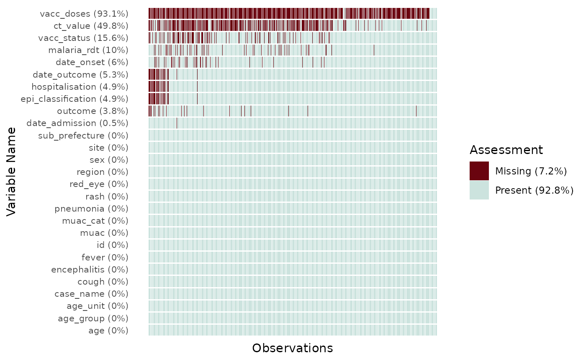
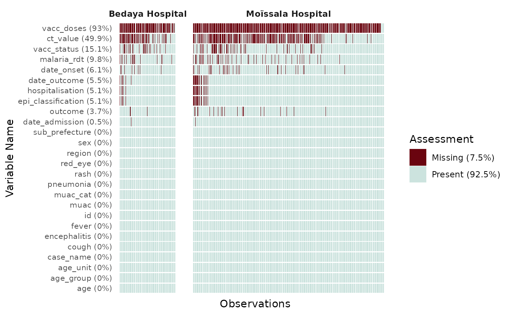
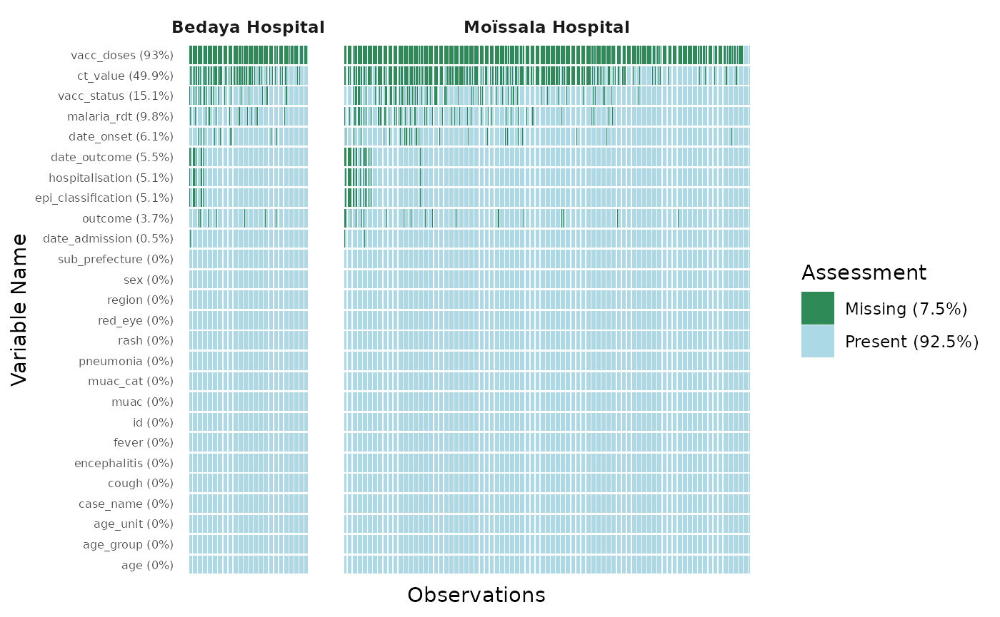

missing_data_visualisation
Source:vignettes/missing_data_visualisation.Rmd
missing_data_visualisation.Rmd
library(dplyr)
#>
#> Attaching package: 'dplyr'
#> The following objects are masked from 'package:stats':
#>
#> filter, lag
#> The following objects are masked from 'package:base':
#>
#> intersect, setdiff, setequal, union
library(ggplot2)
library(epivis)
df <- epivis::moissala_measles
glimpse(df)
#> Rows: 5,028
#> Columns: 27
#> $ id <int> 1, 2, 5, 7, 8, 9, 11, 12, 14, 19, 20, 21, 24, 25, 2…
#> $ site <chr> "Bouna Hospital", "Danamadji Hospital", "Danamadji …
#> $ case_name <chr> "Erin Smith", "Gisselle Hitchell", "Marzooqa al-Azz…
#> $ sex <chr> "f", "f", "f", "f", "m", "f", "m", "f", "f", "m", "…
#> $ age <int> 4, 11, 2, 2, 11, 3, 4, 6, 1, 9, 8, 7, 5, 4, 10, 27,…
#> $ age_unit <chr> "years", "years", "years", "years", "years", "years…
#> $ age_group <fct> 1 - 4 years, 5 - 14 years, 1 - 4 years, 1 - 4 years…
#> $ region <chr> "Mandoul", "Moyen Chari", "Moyen Chari", "Mandoul",…
#> $ sub_prefecture <chr> "Bouna", "Danamadji", "Danamadji", "Bouna", "Bekour…
#> $ date_onset <date> 2022-08-13, 2022-08-17, 2022-08-21, 2022-08-22, 20…
#> $ hospitalisation <chr> NA, "yes", "yes", "yes", "yes", "yes", "yes", "yes"…
#> $ date_admission <date> 2022-08-20, 2022-08-19, 2022-08-22, 2022-08-24, 20…
#> $ ct_value <dbl> 25.6, NA, 25.6, 25.6, 25.6, NA, NA, 25.6, 25.6, 25.…
#> $ malaria_rdt <chr> "negative", "negative", "negative", NA, "negative",…
#> $ fever <int> 1, 0, 1, 0, 1, 0, 1, 1, 0, 0, 1, 1, 0, 1, 1, 1, 1, …
#> $ rash <int> 1, 0, 0, 1, 0, 1, 1, 1, 0, 1, 1, 0, 0, 1, 1, 1, 1, …
#> $ cough <int> 1, 1, 0, 1, 0, 1, 1, 0, 0, 1, 1, 1, 1, 1, 0, 1, 1, …
#> $ red_eye <int> 0, 0, 1, 0, 0, 0, 0, 1, 1, 1, 0, 1, 0, 0, 1, 0, 1, …
#> $ pneumonia <int> 0, 0, 0, 0, 0, 0, 0, 0, 0, 0, 0, 0, 0, 0, 0, 0, 0, …
#> $ encephalitis <int> 0, 0, 0, 0, 0, 0, 0, 0, 0, 0, 0, 0, 0, 0, 0, 0, 0, …
#> $ muac <int> 175, 187, 204, 95, 120, 160, 207, 176, 118, 164, 21…
#> $ muac_cat <chr> "Green (125+ mm)", "Green (125+ mm)", "Green (125+ …
#> $ vacc_status <chr> "No", NA, NA, "No", "No", "No", "No", "Yes - oral",…
#> $ vacc_doses <chr> NA, NA, NA, NA, NA, NA, NA, "Uncertain", NA, NA, NA…
#> $ outcome <chr> "recovered", "recovered", "recovered", "recovered",…
#> $ date_outcome <date> NA, 2022-08-20, 2022-08-27, 2022-08-27, 2022-08-29…
#> $ epi_classification <chr> NA, "confirmed", "suspected", "probable", "suspecte…By default plot_miss_vis() will plot a graph of the
missing values in each of the observations and variables of the
dataframe. It will present the proportions of missing values for a
single variables in the label of the y-axis, and the overall proportions
of missing value across the dataframe in the legend.
plot_miss_vis(
df
)
Facet the graph
The missing values plot can be facetted by a group variable using the
facet = "variable_name" argument
df |>
filter(site %in% c("Moïssala Hospital", "Bedaya Hospital")) |>
plot_miss_vis(
facet = "site"
)
Further customisation
Colors of the graph can be changed using the color_vec
argument. It takes a length 2 vector of HEX code, with the first color
for Missing values. y_axis_text_size allows manual
specification of the y-axis text size, which can be hard to read when
exploring many variables.
df |>
filter(site %in% c("Moïssala Hospital", "Bedaya Hospital")) |>
plot_miss_vis(
facet = "site",
y_axis_text_size = 6,
col_vec = c("seagreen", "lightblue")
)